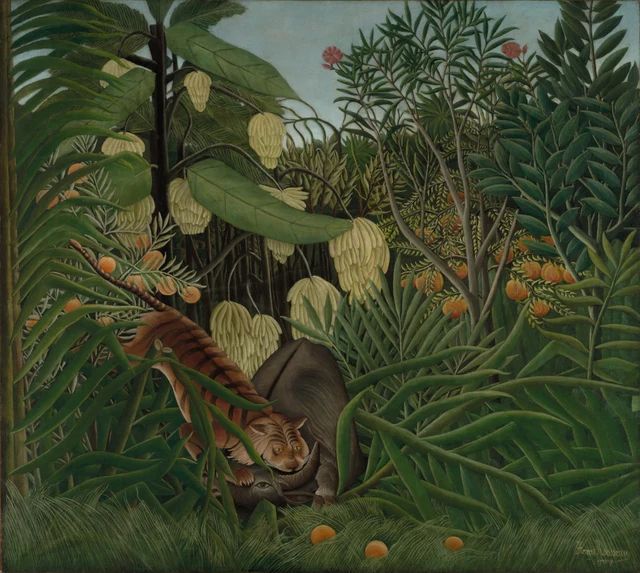
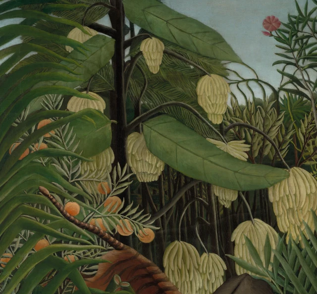
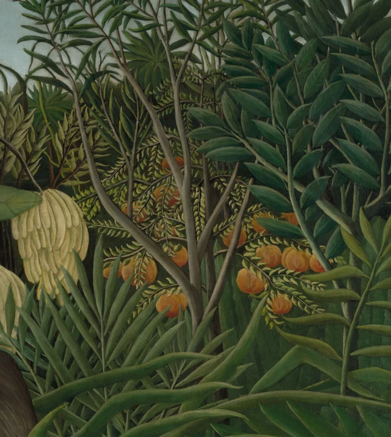
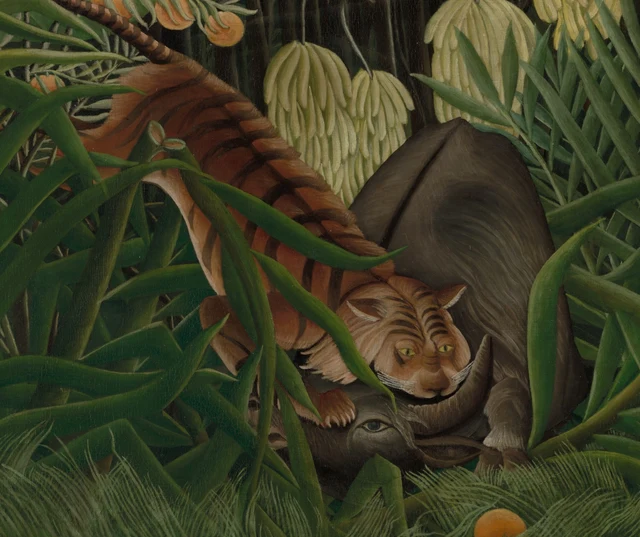

Recorramos primero el borde superior del cuadro. A la izquierda, unas hojas largas se superponen y se curvan hacia el centro. A la derecha, otras más estrechas se abren en grupos a lo largo de las ramas y recortan el cielo gris azulado en huecos irregulares. Al bajar la mirada, las hojas anchas y puntiagudas, los frutos redondos y los racimos de un amarillo pálido ocupan casi toda la tela. Los dos animales que dan título a la obra quedan apretados en la parte inferior. Incluso sus cabezas hay que buscarlas entre el follaje.
Esta selva tiene algo extraño: muchas de sus formas se ven con toda claridad, pero cuesta imaginar cómo podríamos atravesarla.

Rousseau vivió en Francia y nunca visitó las selvas tropicales que pintaba. El Cleveland Museum of Art señala los libros de viajes y el jardín botánico de París como fuentes de sus paisajes imaginados. Esta obra se expuso en el Salón de los Independientes en 1908. Ese contexto permite ver las plantas como imágenes seleccionadas, ampliadas y reunidas en una nueva composición. La naturaleza y las ilustraciones accesibles desde la ciudad aportaron los materiales, pero el lugar resultante no tenía un mapa al que ajustarse. Contexto de la obra
Lo que más interesa aquí es cómo las plantas construyen, a la vez, un entorno y una barrera. Cada hoja tiene su forma, y a menudo podemos distinguir cuál está delante de cuál. Sin embargo, cuando esas capas ocupan el conjunto, quedan tan próximas que parecen estorbarse unas a otras. La claridad no hace más transitable la selva. Da una forma especialmente precisa a su espesura.
1. Cada hoja propone un recorrido distinto
Las hojas más exteriores de la izquierda entran desde el borde y dibujan una sucesión de grandes arcos. No tienen la misma longitud ni guardan distancias regulares. Unas puntas miran hacia la derecha; otras se inclinan hacia abajo. La mirada puede deslizarse por el contorno de una hoja, detenerse un momento en su extremo y continuar por la siguiente. El recorrido parece casi continuo, aunque en todo momento reconocemos las formas individuales que lo componen.
Por detrás se extienden hojas mucho más anchas y planas. Una de la zona central superior sale hacia la derecha desde un tallo oscuro. Sus nervaduras dividen la superficie verde en varios sectores oblicuos. El borde se vuelve ligeramente sobre sí mismo, y las variaciones de luz y sombra permiten percibir su espesor y sus cambios de orientación. Al mismo tiempo, la hoja funciona como una gran forma horizontal que interrumpe de golpe el dibujo menudo de las plantas situadas detrás.

En la derecha cambia el ritmo. Unas hojas ovaladas, terminadas en punta, se disponen a ambos lados de ramas verticales. Una pareja sigue a otra y forma una pequeña escalera ascendente. Más atrás, otras hojas más cortas y numerosas parecen repetir una manera semejante de ramificarse a menor escala. Hay parecido, pero no una regularidad tan rígida que permita deducir todo el conjunto a partir de una sola unidad. Las hojas se inclinan en distintas direcciones y los grupos tienen densidades desiguales.
Estas diferencias son decisivas. Decir que en el cuadro «hay mucho verde» dejaría fuera la manera en que se organiza la selva. Las hojas largas hacen que la mirada se curve; las anchas la retienen en una superficie; las parejas de hojas pequeñas la hacen subir por etapas. Rousseau distribuye distintas velocidades de observación mediante distintas formas. Cada elemento, por aislado que pueda parecer, participa en el ritmo general. Miramos hojas concretas y, a la vez, seguimos los recorridos que su disposición hace posibles.
2. Se distingue la profundidad, pero no aparece un camino
El cuadro sí tiene profundidad. Las hojas largas de la izquierda pasan por delante del tigre, y este tapa parte de la vegetación que queda detrás. A la derecha se levanta un árbol gris parduzco, cuyas bifurcaciones se recortan sobre grupos de hojas más oscuras. Cada superposición nos permite avanzar un poco hacia el interior. La dificultad es que, tras ese avance, una nueva hoja vuelve a cerrar el paso.
Solemos esperar que lo lejano pierda intensidad y que sus contornos se suavicen, de modo que aumente la distancia perceptible entre el primer plano y el fondo. Aquí, muchas hojas posteriores conservan perfiles nítidos y trazos minuciosos. Podemos reconocer que un grupo está detrás de otro, pero no calcular con facilidad cuánto los separa. La profundidad se insinúa una y otra vez; las formas claramente delimitadas vuelven a acercarla a la superficie del lienzo.
El cielo introduce una pausa. Su zona gris azulada, situada arriba y hacia el centro, no se prolonga libremente hasta ninguno de los lados. La rodean puntas de hojas y extremos de ramas. Ese fondo más claro y menos ocupado ayuda a separar las plantas que tiene delante, pero no desciende hasta convertirse en una vía de acceso. Podemos mirar hacia fuera sin encontrar un trayecto que una el suelo de la selva con esa apertura.

El árbol permite entender bien esta peculiaridad espacial. La franja clara de un borde y la sombra del costado dan al tronco una presencia redonda y sólida. También se distinguen con precisión sus bifurcaciones. En cambio, las hojas no nos dicen dónde se hunde en el suelo ni cuánto espacio libre tiene alrededor. El volumen de una parte está bien definido; falta un terreno continuo sobre el que medir las distancias. Conocemos mejor la forma del tronco que el lugar que ocupa.
Por eso, hablar de una «pared de plantas» resulta útil como comparación, siempre que no lo tomemos al pie de la letra. Hay relaciones de delante y detrás; no todo está extendido sobre un único plano. Sería más exacto hablar de numerosas capas poco profundas, muy próximas entre sí. Los ojos atraviesan algunos huecos, pero el cuerpo imaginado suele detenerse en la capa siguiente.
3. El amarillo pálido y el naranja enlazan zonas distintas
El verde domina la superficie, aunque dentro de él hay tonos frescos y amarillentos, otros apagados y grisáceos, y profundidades casi negras. Sus variaciones permiten distinguir los grupos de hojas. A ellos se suman dos familias de color muy visibles: los racimos amarillo pálido de la mitad izquierda y los frutos redondos anaranjados de ambos lados y del borde inferior.
Cada racimo claro reúne muchas piezas alargadas y presenta un contorno parecido al de una borla recogida. Cuelgan ante tallos oscuros. Algunos quedan medio ocultos por hojas anchas; otros aparecen más completos en las zonas inferiores. La repetición hace que los reconozcamos enseguida, mientras que las distintas superposiciones modifican su manera de mostrarse. Desde un racimo luminoso de arriba podemos localizar otro más abajo, y luego otro. Así se establece una relación vertical, interrumpida a trechos por el follaje.
El naranja sigue otro recorrido. Los frutos redondos asoman entre las ramas de la izquierda, se agrupan a la derecha y reaparecen en la franja inferior. Conectan áreas separadas sin formar una fila regular que vaya empequeñeciendo hacia el fondo. Estos pequeños círculos cálidos parecen transmitir una señal de color entre distintas zonas verdes. Por eso buscamos sus semejantes de izquierda a derecha y de arriba abajo, en lugar de concentrarnos únicamente donde están los animales.
El tono pardo anaranjado del tigre entra en esa misma red. Su cuerpo, desde luego, es más complejo que un fruto: tiene lomo, cabeza, pelaje y una postura dentro de la lucha. Sin embargo, en la vista de conjunto su color cálido no queda aislado de las plantas. Los puntos naranjas de alrededor hacen que el cuerpo rayado destaque y, al mismo tiempo, permanezca ligado a las relaciones cromáticas de la selva.
Las dos flores rosadas de la zona superior están mucho más espaciadas. Aparecen ante el cielo claro y mantienen una distancia distinta de los grupos de frutos anaranjados de abajo. El cuadro no llena todos los huecos con idéntica densidad. Sus pocas zonas más despejadas nos hacen percibir con mayor claridad la congestión de la parte inferior.
4. Los animales entran en la disposición de las hojas
Volvamos ahora a la lucha. El cuerpo del tigre se prolonga en diagonal hacia arriba y hacia la izquierda, con la cola levantada entre las plantas. La cabeza, en cambio, está baja y la cara se vuelve hacia nosotros. A su lado sobresale el lomo gris parduzco del búfalo. Este mantiene la cabeza muy abajo; bajo el verde aparecen un ojo y un cuerno curvado. Una de las patas delanteras del tigre presiona la cabeza del búfalo, mientras la boca queda en contacto con la zona de su cabeza y cuello. La proximidad y la presión entre los cuerpos bastan para reconocer el conflicto anunciado en el título.

Las plantas no les han abierto un escenario despejado. Una hoja curva cruza el lomo y el hombro del tigre; otras puntas se introducen en su silueta. Aunque la cara se ve bastante completa, la continuación de su acción hacia abajo sigue parcialmente tapada. Para reconstruir la postura tenemos que enlazar fragmentos separados por las hojas. La escena puede reconocerse, pero exige ese pequeño trabajo de unión.
El lomo del búfalo ofrece una superficie gris parduzca excepcionalmente amplia, sólida entre tantas hojas estrechas. La línea oscura de la espalda y los cambios de luz en el costado redondeado le dan volumen. Su cabeza, situada más abajo, está comprimida en un espacio más angosto y oscuro. La cara del tigre y el único ojo visible del búfalo se concentran así en una pequeña zona inferior. El conflicto resulta claro y, a la vez, encajonado.
Para mí, la tensión procede sobre todo de esa falta de espacio. La lucha está ocurriendo, pero las plantas no se apartan con un gran movimiento ni hay un suelo abierto sobre el que los cuerpos puedan girar. Los animales parecen sujetos entre las hojas largas; el enfrentamiento queda concentrado en un lugar muy limitado. Reconocemos el contacto y la presión, aunque no podamos completar una secuencia inequívoca de acciones anteriores y posteriores.
En el borde más próximo, las hierbas finas forman una franja de líneas curvas y ocultan todavía más las patas y el suelo. Su ligereza casi plumosa no recuerda a una pared maciza, pero aun así constituyen la última barrera visual en la parte baja del lienzo. Allí se corresponden las rayas del tigre, las nervaduras y los trazos de las hierbas: las superficies de animales y plantas se articulan mediante series de líneas. Es una relación visible en la pintura. No hace falta convertirla en una alegoría sobre alguna ley general de la naturaleza.
5. Una selva que se sostiene en el lienzo
Recordemos las dimensiones reales: 170 centímetros de alto y 189,5 de ancho. La altura de la tela se aproxima a la de una persona adulta. En una reproducción reducida en pantalla, las hojas pueden parecer adornos delicados. A la escala del original, las hojas anchas, las ramas y los cuerpos animales se presentan de una manera mucho más directa ante quien mira. La sensación de ver con claridad y, sin embargo, no poder entrar fácilmente tiene también una dimensión corporal.
El museo señala expresamente que los plátanos crecen en una dirección que no corresponde a la realidad botánica. Es un dato importante porque cambia la pregunta sobre la exactitud. Esta selva no serviría como inventario de las plantas de un lugar tropical determinado. Al mismo tiempo, sus contornos, repeticiones y superposiciones sí admiten una descripción detenida y precisa. Comentario del museo
Despachar el conjunto con la palabra «ingenuo» haría que pasáramos demasiado deprisa sobre esas decisiones pictóricas. Los grandes arcos de la izquierda no son iguales que las ramas verticales de la derecha; los racimos pálidos no se distribuyen como los puntos naranjas; las amplias superficies de los animales contrastan con las hierbas más finas del primer plano. El efecto general nace de cómo se enlazan todas esas formas distintas dentro de una misma tela. No basta con llenar un espacio de vegetación para obtenerlo.
A mi juicio, la mayor fuerza de la obra está en organizar la abundancia de manera legible y conservar, a la vez, la resistencia que esa abundancia opone al movimiento. Cada grupo de hojas invita a detenerse. Cuando tantas invitaciones se superponen, la mirada no puede abandonar con rapidez ninguna zona. La lucha introduce el peligro en la selva; la selva decide cómo se deja ver ese peligro y hasta qué punto queda rodeado.
Esto explica también por qué la vista completa ofrece más que un primer plano aislado de la cabeza del tigre. El dramatismo animal es solo una de las fuerzas presentes. A lo largo de la gran superficie, las plantas distribuyen continuamente las posiciones, los intervalos y los grados de visibilidad. Incluso los protagonistas deben encontrar entre ellas un hueco por el que aparecer.
Lectura opcional con SAE
El siguiente ejercicio utiliza la estética SAE, «Self-as-an-End», de Han Qin como propuesta contemporánea de observación. No atribuye estas ideas a Rousseau ni pretende explicar sus intenciones.
SAE distingue la belleza de la corrección del conocimiento y separa las preferencias personales de los fundamentos que podemos discutir al emitir un juicio. Esa distinción sugiere una pregunta concreta: ¿en qué lugares sigue funcionando la organización del cuadro cuando sus plantas no coinciden del todo con la botánica? SAE sobre juicio y estética
Elija dos grupos de hojas: por ejemplo, los arcos largos de la izquierda y las parejas pequeñas de la derecha. Deje por un momento la identificación de las especies. Describa qué se repite en cada grupo, dónde cambia la dirección y qué hoja oculta a cuál. Pregúntese después si ambos dan a la mirada la misma velocidad. ¿Organizan sus respectivos espacios con densidades diferentes? La respuesta debe poder señalar una parte concreta del cuadro; de lo contrario, decir «parece muy exuberante» seguirá siendo demasiado general.
Incorpore ahora lo que sabe de botánica. ¿La orientación de los plátanos hace que esta selva le parezca más compuesta o dispuesta por alguien? Si es así, precise qué cambia: ¿su confianza en la fidelidad a un lugar real o la relación entre los arcos y los intervalos de la imagen? Ambas cosas pueden modificarse, y no necesariamente en la misma medida.
El ejercicio no exige que al final nos guste Rousseau a todos. Una persona puede encontrar ritmo en las hojas repetidas; otra puede sentir que se acumulan demasiado y dejan poco desahogo. Lo que merece seguir discutiéndose es si podemos señalar la misma repetición y explicar cómo respalda cada juicio. El dato botánico y el efecto pictórico reciben así una atención igualmente seria, sin tener que sacrificar uno para defender el otro.
Imágenes y fuentes
Las descripciones visuales se basan en la observación directa de la imagen oficial de 3400 × 3046 píxeles del Cleveland Museum of Art y de sus detalles. La vista completa conserva sin cambios el archivo descargado. Las tres vistas parciales son únicamente recortes, con los píxeles originales y el perfil de color ICC incrustado. No se han ajustado colores, aumentado la nitidez, retocado formas ni añadido contenido generado. El color de la pantalla, la distancia de observación y el tamaño de reproducción difieren de las condiciones ante el original.
La identificación, las medidas, la exposición y el contexto histórico proceden de la documentación del museo. Las observaciones sobre espacio, ritmo y efectos de la mirada son interpretaciones de esta lectura. No se deduce de la reproducción digital el orden de ejecución ni la estructura de las capas de pintura. La imagen está amparada por la política de acceso abierto CC0; esa licencia no equivale a una autorización general para reproducir los textos del museo. Véanse también las Referencias y los Créditos de las imágenes incluidos en este conjunto.